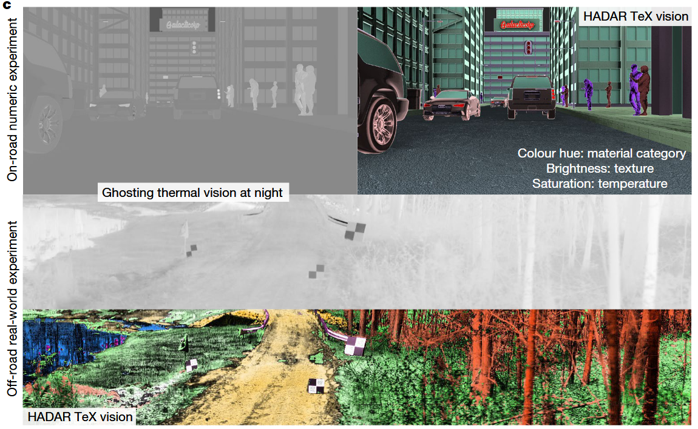

High Temperature Thermal Materials
Machine perception uses advanced sensors to collect information about the surrounding scene for situational awareness . State-of-the-art machine perception using active sonar, radar and LiDAR to enhance camera vision9 faces difficulties when the number of intelligent agents scales up. Exploiting omnipresent heat signal could be a new frontier for scalable perception. However, objects and their environment constantly emit and scatter thermal radiation, leading to textureless images famously known as the ‘ghosting effect’. Thermal vision thus has no specificity limited by information loss, whereas thermal ranging—crucial for navigation—has been elusive even when combined with artificial intelligence (AI). Here we propose and experimentally demonstrate heat-assisted detection and ranging (HADAR) overcoming this open challenge of ghosting and benchmark it against AI-enhanced thermal sensing. HADAR not only sees texture and depth through the darkness as if it were day but also perceives decluttered physical attributes beyond RGB or thermal vision, paving the way to fully passive and physics-aware machine perception. We develop HADAR estimation theory and address its photonic shot-noise limits depicting information-theoretic bounds to HADAR-based AI performance. HADAR ranging at night beats thermal ranging and shows an accuracy comparable with RGB stereovision in daylight. Our automated HADAR thermography reaches the Cramér–Rao bound on temperature accuracy, beating existing thermography techniques. Our work leads to a disruptive technology that can accelerate the Fourth Industrial Revolution (Industry 4.0) with HADAR- based autonomous navigation and human–robot social interactions.

The emerging Industry 4.0 of smart technologies15 calls for a future with scalable human–robot social interactions, as it is expected that one in ten vehicles will be automated by 2030 and 20 million robot helpers will be serving people. Each of these agents will collect information about its surrounding scene through advanced sensors to make decisions without human intervention. However, simultaneous perception of the scene by numerous agents (scalable perception) is fundamentally prohibitive for active modalities because of signal interference and eye safety. Quasi-passive approaches such as cameras are an alternative but they rely on ambient illumination. Furthermore, cameras cannot compete with human perception even though important strides have recently been made on the basis of deep learning. It causes phenomena such as phantom braking9 in automated vehicles owing to the visual ambiguity and lack of physical context in perception. A shift of fully passive perception beyond traditional vision is urgently needed that can boost the AI industry.